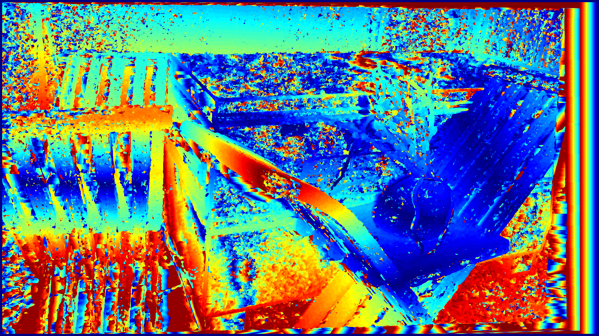
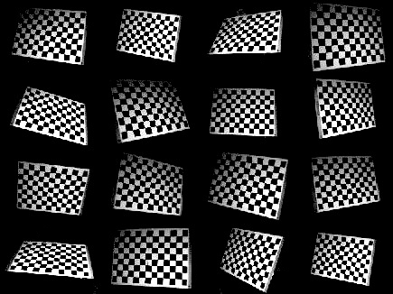
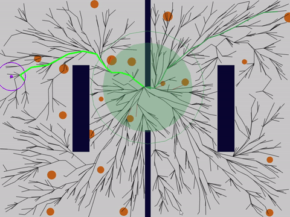

I am a Robotics graduate student at the University of Maryland with a particular interest in the Robotics Software Development, Computer Vision, and Deep Learning domain. I like to work on innovative projects and solve real-world challenging problems. Currently, I am a member of the Perception and Robotics Group at the University of Maryland.
I enjoy hiking and adventure sports.
Domain Skills:
Computer Vision, Deep-Learning, State Estimation, Sensor Fusion, Path Planning, Controls, SLAM, OpenCV, ROS, C++, Python
Selected Projects
Structure from Motion

Detected April tag by removing background using fast FFT and decoded it using homography. Superimposed a custom image and placed a virtual cube on it using projection, calibration, and homography matrices.
DetailsVisual sensor fusion

Detected lanes on straight and curved roads to mimic the Lane Departure Warning system in self-driving cars.
DetailsStereo-Vision
AR-tag detection and tracking

Detected April tag by removing background using fast FFT and decoded it using homography. Superimposed a custom image and placed a virtual cube on it using projection, calibration, and homography matrices.
DetailsLane detection and turn prediction

Detected lanes on straight and curved roads to mimic the Lane Departure Warning system in self-driving cars.
DetailsZhang's camera calibration
Developed module performs detection and tracking of humans in the frame. This is accomplished by using the pre-trained HOG descriptor along with an SVM detector from opencv to detect the location of humans in the camera frame.
DetailsPanorama Stitching

Face Swap

Monocular Human Position Estimator

Developed module performs detection and tracking of humans in the frame. This is accomplished by using the pre-trained HOG descriptor along with an SVM detector from opencv to detect the location of humans in the camera frame.
DetailsHome organizing robot

Autonomous application based on ROS, for search and manipulation of small objects. Projects development was performed using Agile development process and uses navigation stack, Moveit and computer vision to complete the task.
DetailsRT-RRT*
Autonomous application based on ROS, for search and manipulation of small objects. Projects development was performed using Agile development process and uses navigation stack, Moveit and computer vision to complete the task.
DetailsA* path-planning

Languages and Tools
Contact
E-mail: abhimah[at]umd<dot>edu
LinkedIn: linkedin.com/abhijitmahalle
Location: Washington Metropolitan Area